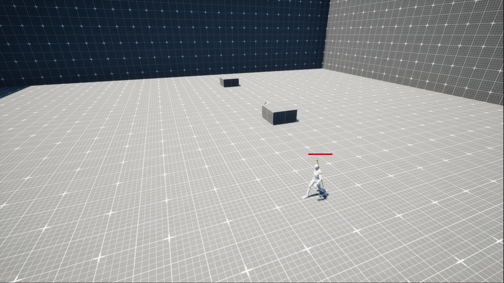
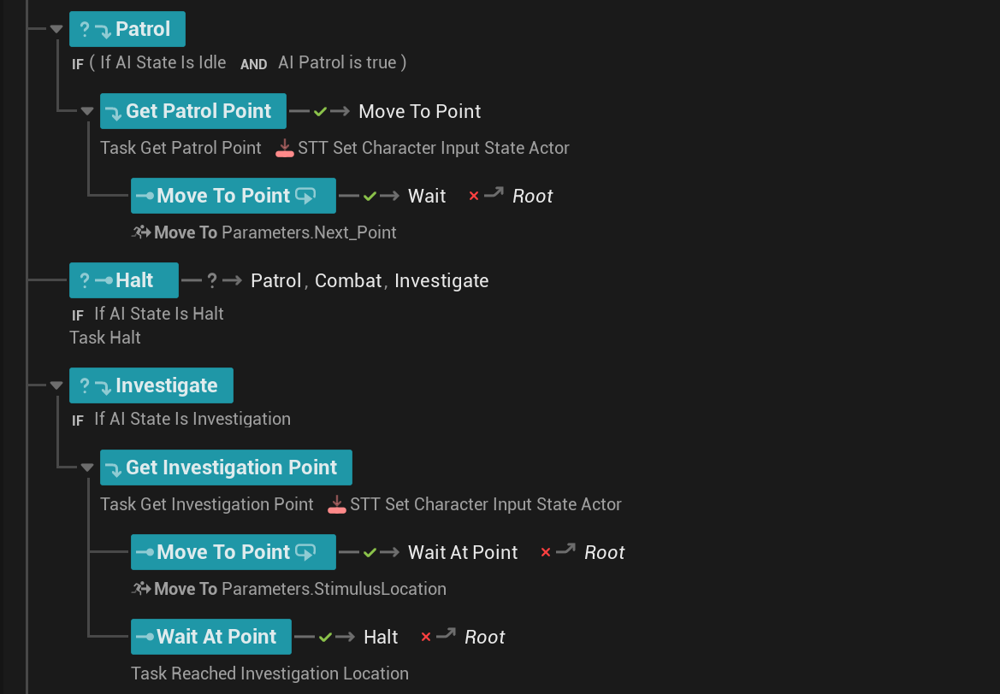
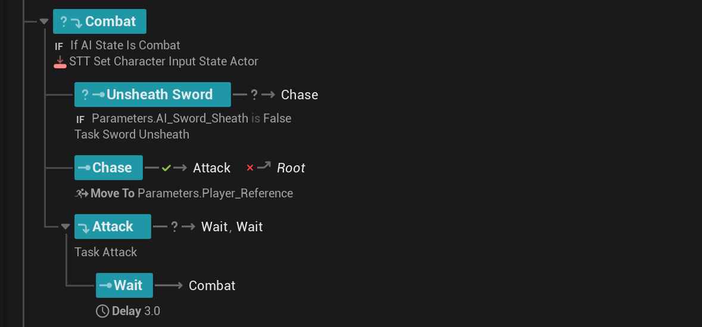
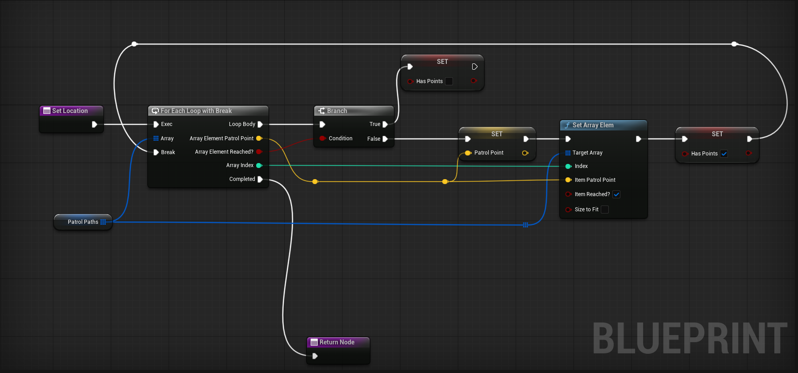

It creates intelligent, escalating responses to player presence - from peaceful spline-based patrol to full combat engagement - using a layered detection and alertness model that rewards player stealth and punishes carelessness.
Rather than binary "sees you / doesn't see you" switches, it uses a graduated alertness system with escalating meters that give players time to react, hide, or engage.
Every encounter can play out differently depending on the player's choices while adhering to various playstyles.


PATROL, HALT, INVESTIGATE, COMBAT - each with child tasks that are executed with their own exit conditions. Transitions between states are handled by GLOBAL EVALUATORS of Statetree.
When the enum changes (e.g. Idle → Halt), the State Tree automatically transitions to the matching branch whenever Gameplay Tag is sent to StateTree when the state is changed.
The State Tree will need to communicate with a Component rather than casting to actor saving resources. This separation of concerns makes the system easier to extend, debug, and reuse across different enemy types without rewriting behaviour logic individually.



Exit B: Player spotted again → re-escalates to ALERT

Tasks: Get Next Patrol Point → Move To Spline Point
Transitions: Patrol, Halt, Investigate, Combat
Tasks: STT Set Character Input State Actor
Transitions: Patrol, Combat, Investigate
Tasks: Get Investigation Point → Move To Parameters.StimulusLocation → Wait At Point
On Arrive Success: → Halt | On Fail: → Root
Tasks: Unsheath Sword (if not sheathed) → Chase (Move To Player_Reference) → Attack → Wait 3s → Root
Chase Fail: → Root



Moving along assigned spline
AI stops - alert meter begins filling
Tracking player - combat meter starts filling
↓ before 100%
reaches 100% ↓
Move to last known location
Move to & attack player
Distance Scaling: Proximity accelerates both meters. A player spotted at close range escalates to Combat far faster than one seen from the edge of detection range - adding a spatial dimension to every encounter.
Spline as Strategy: The patrol route is information. Players who observe patterns can exploit gaps, time stealth kills, or predict when the AI will face away.
Meter Transparency: The two visible meters turn AI detection into a readable mini-game. Players aren't guessing - they're making informed decisions under pressure.
Investigation as Consequence: Getting partially spotted isn't a failure - it's a new challenge. The investigation state rewards players who react quickly and punishes those who panic.
Dual Resolution Paths: Stealth kill and direct combat serve different playstyles. Neither is mechanically superior in all situations, which means both remain valid throughout gameplay.